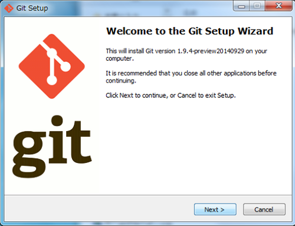
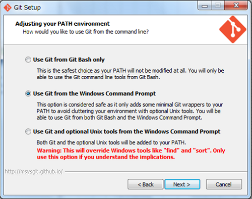
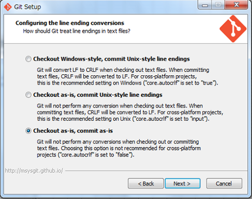
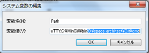
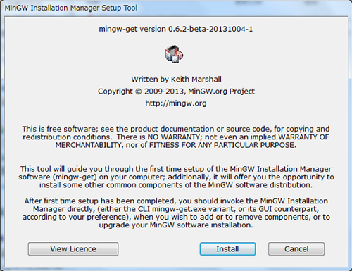
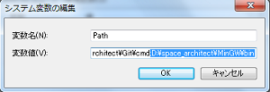
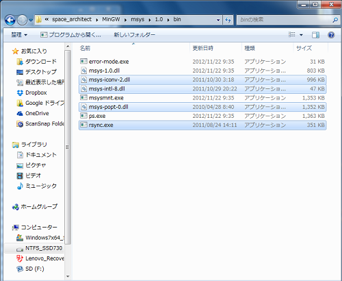

Windowsのコマンドライン環境を整える
Windowsのコマンドライン環境、つまり、Linuxで言うとこのコンソール環境のこと。 Windowsのコマンドライン環境といえば、昔でいうとコマンドプロンプト、今ならPowerShellだけど、 どちらもとてもじゃないけど使いやすいとは言えないので、GitBash+MinGWでWindowsのコマンドライン環境を設定します。 これだと、まぁ本来の目的であるGitHubへの操作や、 MinGWを導入することによって、よく利用するrsyncコマンドなどがWindows環境でも利用しやすくなるかと思います。
1. GitBashのインストール
http://git-scm.com/ から Downloads -> Windows をクリックして、インストーラをダウンロードします (2014.12.15現在はGit-1.9.4-preview20140929.exeでした)。 インストーラを実行し、「Select Start Menu Folder」まではデフォルト設定でOKです。
「Adjusting your PATH environment」では、”Use Git from the Windows Command Prompt”を選択します。
「Configuring the line ending conversions」では、”checkout as-is, commit as-is”を選択します。
2. 環境変数の確認/設定
環境変数のシステム変数の”Path”で、”{インストールドライブ}:\{インストールフォルダ}\Git\cmd”にパスが通っていることを確認します。 もし、通ってない場合は設定を追加します。
3. コマンドの実行
grepは”GNU grep 2.4.2”がインストールされていることが確認できます。
$ grep --version
grep (GNU grep) 2.4.2
Copyright 1988, 1992-1999, 2000 Free Software Foundation, Inc.
This is free software; see the source for copying conditions. There is NO
warranty; not even for MERCHANTABILITY or FITNESS FOR A PARTICULAR PURPOSE.
diffは”GNU diff 2.7”がインストールされていることが確認できます。
$ diff --version
diff - GNU diffutils version 2.7
4. MinGWのインストール
http://www.mingw.org/ から Downloads -> Download mingw-get-setup.exe (86.5 kB) をクリックして、 インストーラをダウンロードします(2014.12.15現在はModifiedが2013-10-04でした)。 インストーラを実行します(すべてデフォルト設定でOKです)。
5. 環境変数の確認/設定
環境変数のシステム変数の”Path”で、 “{インストールドライブ}:\{インストールフォルダ}\MinGWbin”にパスが通っていることを確認します。 もし、通ってない場合は設定を追加します。 | # 実は要らないと言えば要らないのですが、環境変数の設定を癖付けるためということで…。
6. rsyncパッケージのダウンロードとGitBashへの設定
GitBashへの設定に必要なファイルは以下の4ファイルです。この4ファイルが含まれるパッケージをすべてダウンロードします。
- rsync.exe (Package：msys-rsync/Class:bin)
- msys-iconv-2.dll (Package：msys-libiconv/Class:dll)
- msys-intl-8.dll (Package：msys-libintl/Class:dll)
- msys-popt-0.dll (Package：msys-libport/Class:dll)
ダウンロードすると、”{インストールドライブ}:\{インストールフォルダ}\MinGW\msys\1.0\bin”に、 上記4ファイルはダウンロードされていますので、これをコピーし、 “{インストールドライブ}:\{インストールフォルダ}\Git\bin”にペーストします。
7. コマンドの実行
rsyncは”rsync version 3.0.8 protocol version 30”がインストールされていることが確認できます。
$ rsync --version
rsync version 3.0.8 protocol version 30
Copyright (C) 1996-2011 by Andrew Tridgell, Wayne Davison, and others.
Web site: http://rsync.samba.org/
Capabilities:
32-bit files, 32-bit inums, 32-bit timestamps, 64-bit long ints,
socketpairs, hardlinks, symlinks, no IPv6, batchfiles, inplace,
append, ACLs, no xattrs, iconv, no symtimes
rsync comes with ABSOLUTELY NO WARRANTY. This is free software, and you
are welcome to redistribute it under certain conditions. See the GNU
General Public Licence for details.